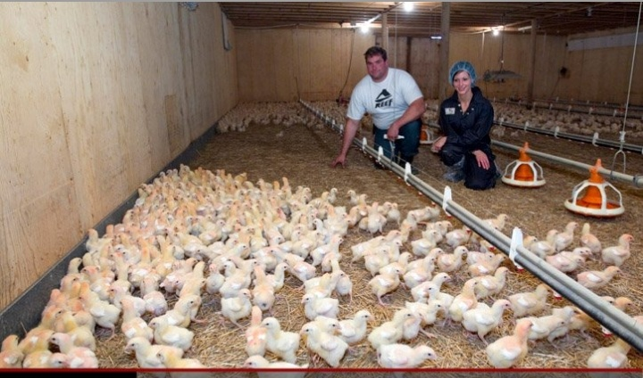
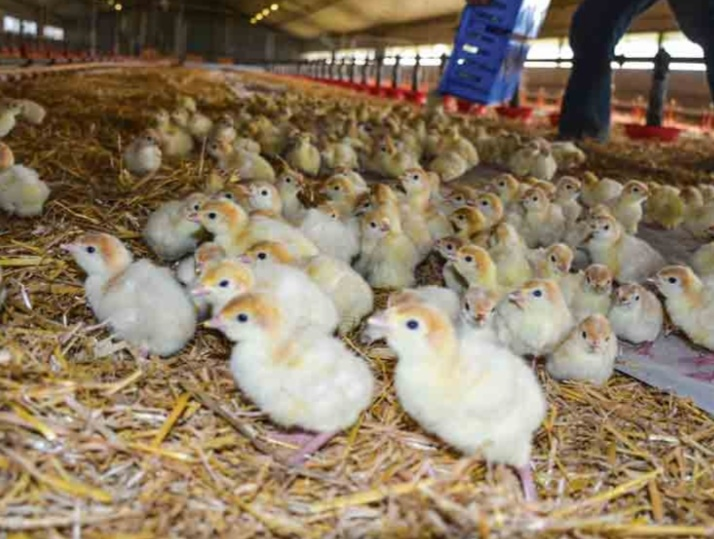
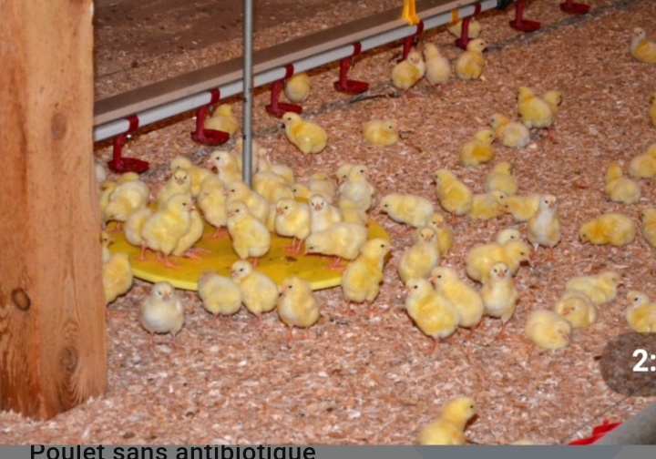

Bienvennue dans cette fermerie
une petite présentation de mon poulailler
Un poulailler est un batiment d'élévage de volaille ,en particulière de poules ,de taille modeste.les volailles aiment vivre à l'extérieur mais le poulailler procure un abri contre les prédacteurs ,le froid et la nuit.chaque poule doit pouvoir disposer d'au minimum 0,5m^2.
Elévage et vente de poule de chair


